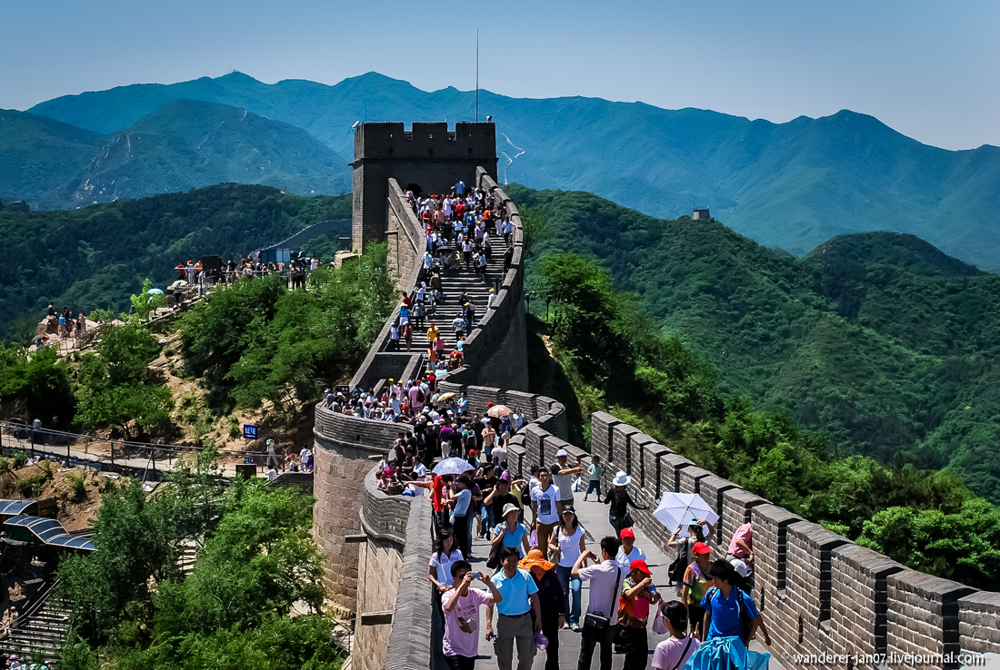

Китай
Китай
Китай – густонаселенная страна в Восточной Азии с разнообразными ландшафтами и рельефом. Здесь можно найти луга, пустыни, горы, озера, реки и побережья протяженностью более 14 тыс. км. Столица страны, Пекин, славится современной архитектурой и древними памятниками, среди которых дворцовый комплекс Запретный город и площадь Тяньаньмэнь. На востоке расположен мировой финансовый центр Шанхай, силуэт которого формируют бесчисленные небоскребы. По северному Китаю, пересекая его с востока на запад, проходит Великая Китайская стена. Население — 1,412 миллиарда. Столица — Пекин. Государственный язык — Китайский. Национальная валюта — Китайский юань.Когда лучше ехать в Китай
Лучшее время для поездок в Китай — поздняя весна (апрель и май), а также осень с сентября по октябрь, (на юге — с ноября по декабрь). А вот на остров Хайнань вполне можно ездить круглый год. Среднегодовая температура воздуха там +28 °C, морской воды — +25,6 °C.Билеты на ближайшие полёты
| Куда | Продолжительность | Дата | Стоимость | Покупка |
|---|